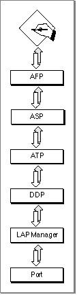

Legacy Document
Important: The information in this document is obsolete and should not be used for new development.
Important: The information in this document is obsolete and should not be used for new development.


About AFP
AFP is a remote filing system protocol that provides a workstation on an AppleTalk network with access to a server that is implemented according to the AFP file system structure. AFP also includes user authentication support and an access control mechanism that supports volume-level and folder-level access rights. AppleShare is the AFP file server that is implemented on Macintosh computers.Through the native file system and AFP, your application running on one node can manipulate files on another node using the same file system commands on the remote node that it uses to manipulate files on its own node. You can use AFP commands to
AFP is implemented by the .XPP driver. The .XPP driver maps an AFP function call from the client workstation into one or more ASP function calls. Figure 9-1 shows AFP and its underlying protocols.
- obtain and modify information about the file server and other parts of the file
system structure- create and delete files and directories
- read files or write to them
- retrieve and store information within individual files
Figure 9-1 AFP and its underlying protocols

The Pascal programming interface to AFP on the workstation consists of a single function. You use this function to pass to the .XPP driver the command code and parameters for an AFP command. There are four categories of AFP commands: general, login, read, and write. Each of these categories requires a specific format of the XPP parameter block that is used for the AFP function. The next section describes these categories, the commands they include, and the XPP parameter block formats for
each category.
- Please read this note before you continue
- Because the native file system commands implement most of the functions that you need to access an AFP server, in most cases you will not need to use AFP directly. For this reason, this chapter does not include a "Using" section, as do most of the other chapters in this book. If the native file system implements the function that you need, you should use the file system command. If you want to implement a function that is not part of the native file system, you can use AFP directly. In this case, you should continue to read this chapter.